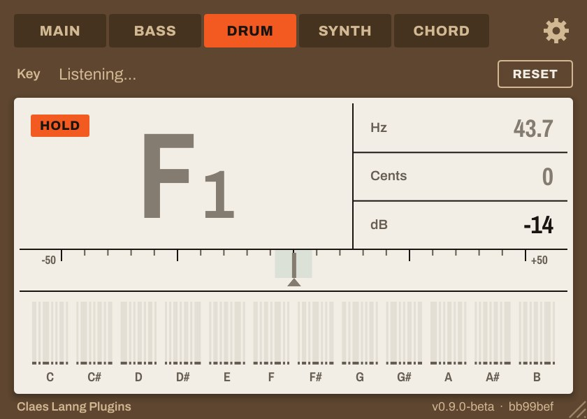
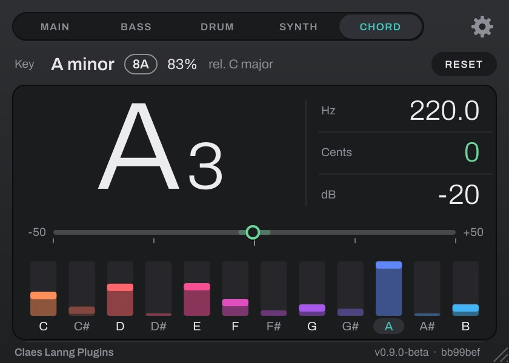
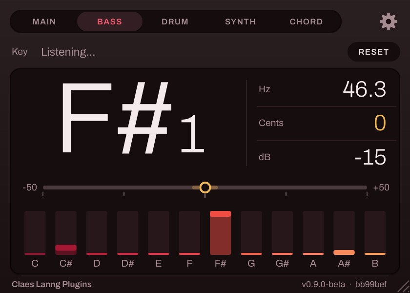

PitchScope
Know the note of your 808, bass or kick, and the key of your loop.
Version 0.9 beta. Free. VST3 for Windows 10 and 11 (64-bit), made for FL Studio. Questions and updates on Patreon.

What it shows
A small window with one big reading, made to be read at a glance from across the room.
- The note
- Note name and octave, how many cents off it is (green when it's within 4 cents), the frequency in Hz and the level in dB.
- The key
- The key of your loop, its Camelot code and how sure it is, plus the relative key and the runner-up.
- Built for the low end
- Reads notes down to 20 Hz, and doesn't jump an octave on distorted 808s.
- Notes that stay put
- When a sound stops, the last note stays on screen, dimmed, so you can read it.
- Light on your CPU
- It never changes your audio, and it pauses the note analysis while its window is closed.
- Four skins
- Label, Graphite, Dark red, and Camelot, which takes the color of the detected key.
Five modes
Tell PitchScope what you're feeding it, and it listens for the right thing. Bass is the default.
| Bass | 808s, basslines and sub-bass, down to 20 Hz. |
|---|---|
| Drum | Kicks and toms: the note a kick settles on, or where a gliding kick lands. |
| Main | Anything. |
| Synth | Leads, plucks and vocals. |
| Chord | Pads and chords: shows the root of the chord. |
PitchScope names notes with middle C as C4. FL Studio's piano roll calls middle C "C5", so FL shows notes one octave higher.
Pick a skin
Choose one in the settings. It's saved with your project.




Install
Needs Windows 10 or 11 (64-bit) and a DAW that loads VST3 plugins, such as FL Studio. Takes about a minute.
- Download
PitchScope-v0.9.0-beta-Windows-VST3.zipand unzip it. - Close FL Studio, then copy the
PitchScope.vst3folder intoC:\Program Files\Common Files\VST3. - Start FL Studio, open Options, then Manage plugins, and click Find more plugins. Add PitchScope to a mixer track or a channel.